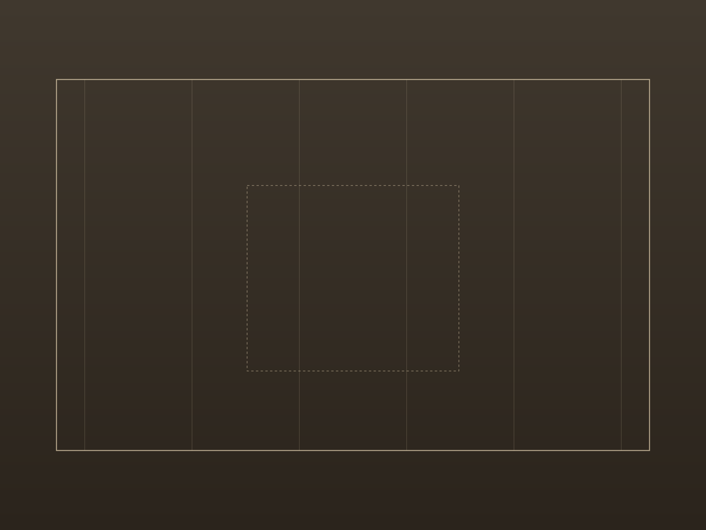
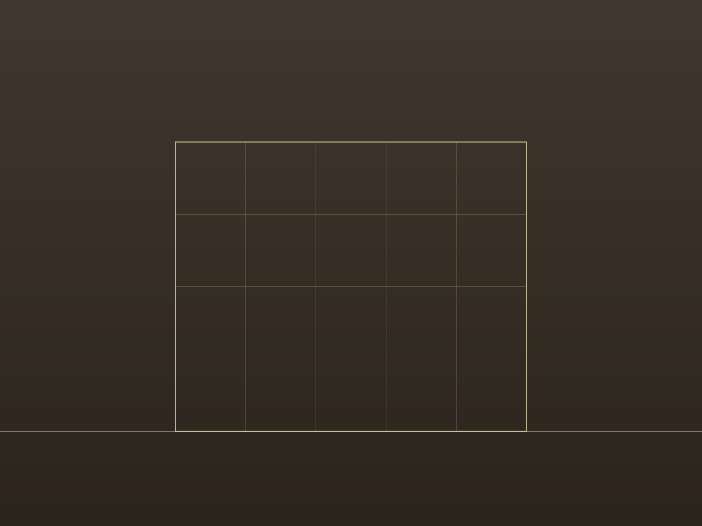
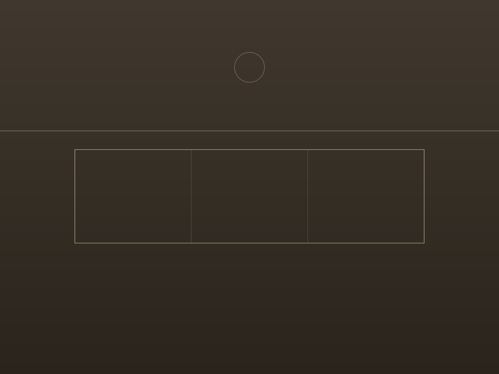

Жилой дом — Киото
Courtyard House
Дом для одной семьи, выстроенный вокруг центрального дворика — свет и сад проникают в каждую комнату, а сам дом остаётся закрытым от улицы. Бетон в опалубке и деревянные вставки сохраняют сдержанную палитру материалов.
- Локация
- Киото, Япония
- Год
- 2024
- Профиль
- Архитектура
- Площадь
- 310 м²



01 / 03